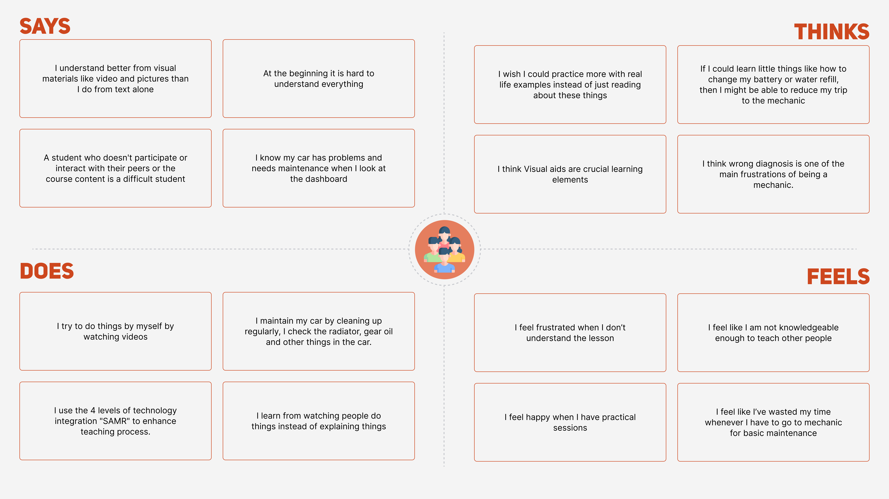
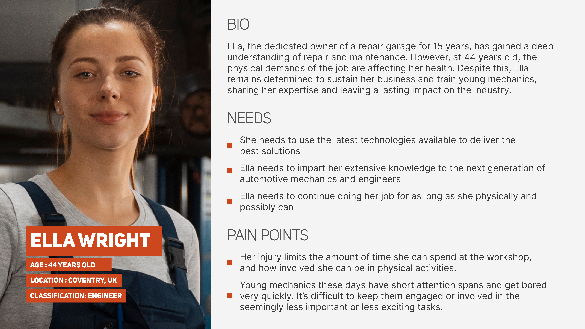
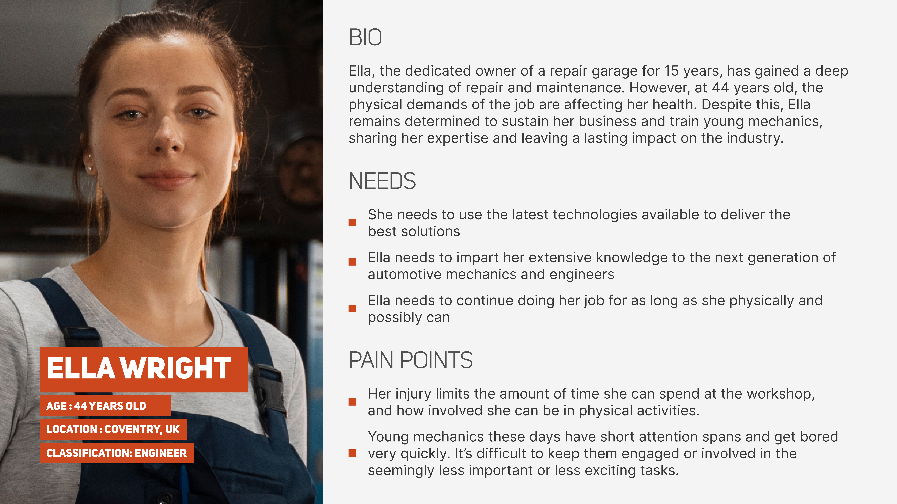
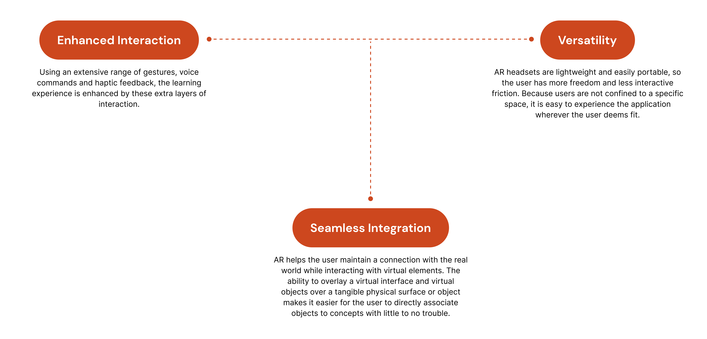
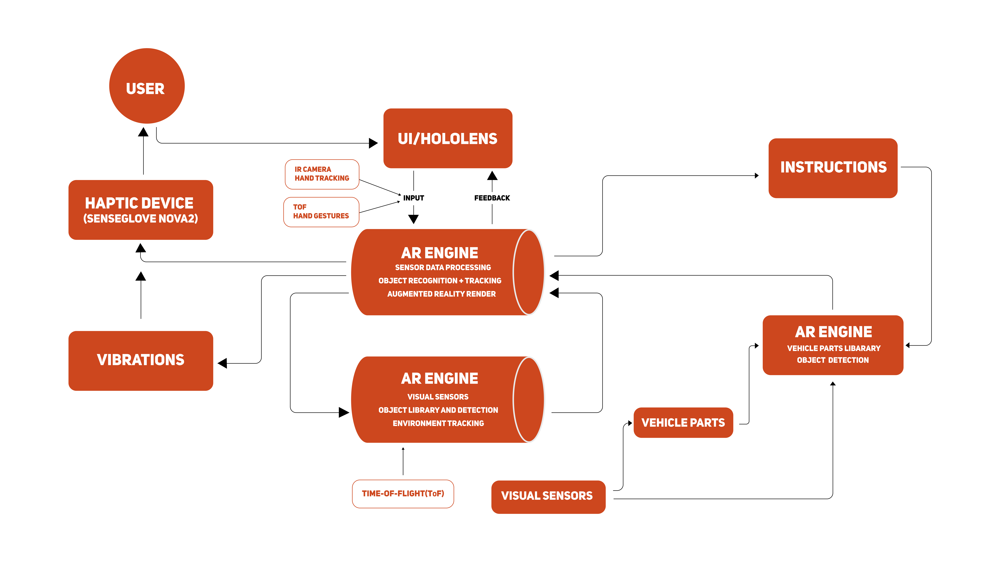
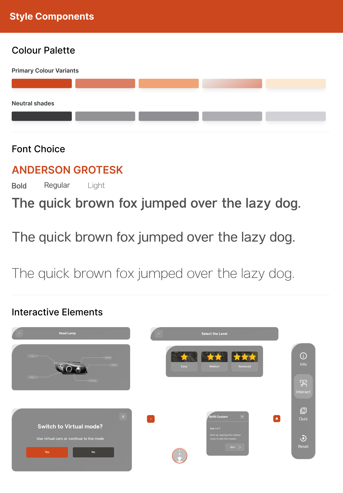

the problem.
Cars are a huge part of our lives, societies and civilization at large. They make life easier, they’re symbols of status, and they inspire children to dream.
However, there are gaps in this relationship between man and machine. Many car owners have poor maintenance habits, many engineering students struggle to learn because they see more equations than actual cars while studying, and training technicians is expensive and hazardous, with risk of heavy artillery misuse leading to life-changing injuries and death sometimes.
project focus.
- Automotive training and education
- Design and engineering
- Parts and components
- Car maintenance
market research.
Prior to starting the design of forwheels, we conducted an extensive market research study to gather information about the current state of automotive education and training at the time. The goal of the research was to identify current weaknesses, new market trends, and possible competitors in order to provide guidance for creating an efficient augmented reality application.

Once we established the needs of the business from the market research, we conducted user interviews with individuals who fit the product's purpose in order to understand their training requirements and pain points.
We had two objectives. The first was to gain a deeper understanding of preferred learning methods, and the second was to learn about prevalent habits pertaining to vehicle ownership and maintenance.
target audience.
- Automotive Engineers
- Mechanics and Maintenance Professionals
- Car Owners
- learning Specialists/engineering Students
empathy map.
We sorted the information from our interviews using the say-think-feel-do framework to compartmentalise the information and hone in on the emotion behind the users pain points.
key realisations.
Here are the key realisations and takeaways from the interviews and individuals we spoke with, which we then categorised into several different groups, which include:
01. The eyes have it
Mirror neurons play a huge part in the human learning experience, especially in children. Mimicry is one of the earliest methods of learning we practice.
- “I learn by observing what others are doing e.g. mechanics”
- “I enjoy the practical sessions more than the theoretic ones”
- “I find it easier to learn by watching people than listening to explanations. I get sleepy when people explain to me.”
02. Images over text
The human brain processes images 60,000 times faster than text, and 90% of the information we recieve from the world around us is visual.
- “I learn better when I watch tutorials on youtube because it allows me to follow step-by-step”
- “In my course, we always use technologies such as manufacturing machines so we can see the actual stuff to understand”
- I love when lecturers demostrate whatever they are trying to explain, I usually don't forget afterwards.
03. Cars need attention
It is not enough to just own a car. You have to cater to your car attentively, to get the most out of your experience with it.
- “I always follow the appointment to maintain my car”
- “Whenever i'm driving i'm always observant and I feel when something is wrong.”
- “I know my car has problems and needs maintenance by looking at the lights on the dashboard”
04. Confidence over time
The more people do things and the more tasks people complete, the more self assured and increasingly confident they become.
- “Finishing things has helped me lose my fear of making mistakes”
- “I didn’t have much self belief when I started out, but after a year I’m able to confidently diagnose the car, buy parts and take the engine apart if need be”
- “These days, I only go to the mechanic if I try and can neither find nor fix the problem myself.”
persona.
Collating and sorting the data we gathered from our interviews, we also created these personas to best represent our target users.


 

why AR?
With the goal of advanced and immersive learning, we had to choose a medium that best demonstrated not just the strengths of our solution, but one that also engaged and enhanced the experience for our target users.
high level architecture.
information architecture.
We organised the application's functions into four categories: learn mode, maintenance mode, freestyle mode, and challenge mode. We then developed a hierarchical navigation system to make it easier to explore these features.
solution.
Forwheels is an automotive learning application that enhances the learning experience of the users by introducting new concepts in a visually engaging manner. It helps grow users confidence in the things they’re already conversant with, and improves automobile maintenance practice using augmented reality technology.
key features.
- Immersive exploration and Interactive Simulations : Virtual models to enhance the learning experience for users.
- Customized Learning Paths: Walk throughs to aid learning through task completion.
- Point based system to encourage exploration and task completion.
- Engaging Assessments: Task based quizzes to enhance user engagement and increase long term memory retention.
wireframing.
We created rough sketches to explore various design concepts on how to best solve this problem. By doing this, we were able to try out different variations, make changes, and refine the ideas swiftly.

style components.
Throughout our design process, we carefully evaluated different aspects of the user interface, including spacing, typography, and color choices. This was done in order to ensure flexibility, which allows all the elements to function seamlessly together and maintain its functionality across a range of device resolutions.
the design.
Learn mode

Maintenance mode

Practice mode